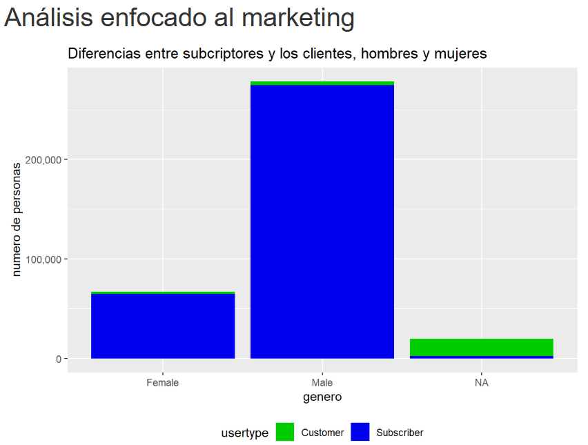
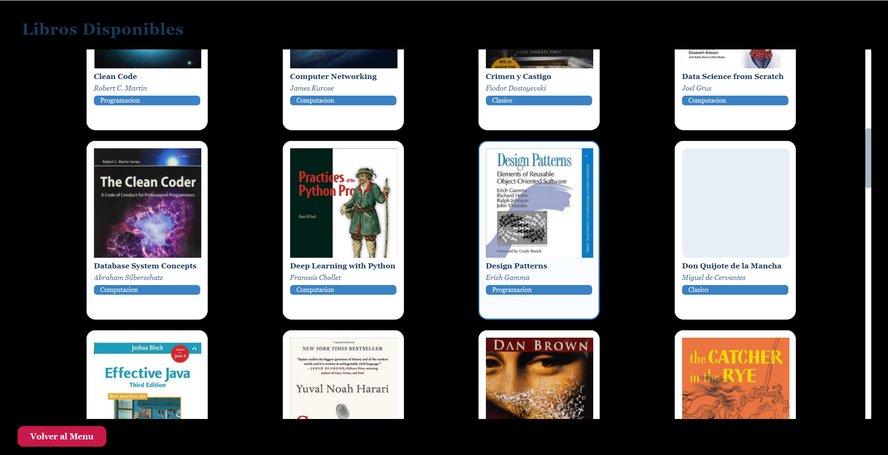
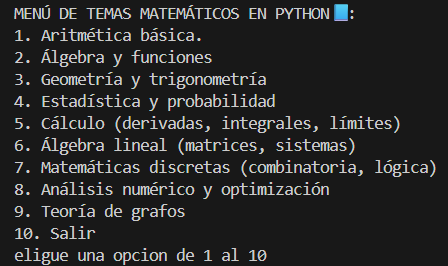
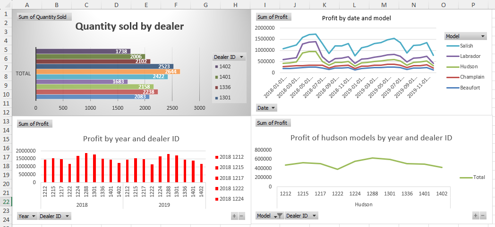

MotorSense — Diagnóstico Predictivo
Evita paradas de fábrica anticipando fallas de motor antes de que ocurran.
Regresión logística desde cero (GD, class_weight, copias defensivas) vs baselines sklearn sobre dataset desbalanceado (3.4% fallas). Split estratificado 80/20, StandardScaler solo en train y evaluación sin accuracy.
Insight: Sin compensar, el recall se hunde (~15%); con balanced/SMOTE sube a ~85%. RandomForest balanced: prec 0.885, rec 0.794, ROC-AUC 0.971. Paridad scratch↔sklearn validada (corr 0.94).

Clasificador Cuántico Variacional (VQC)
Experimento: ¿puede un chip cuántico de 2 qubits clasificar datos con fronteras curvas mejor que lo clásico?
Clasificador híbrido con angle encoding Ry(x) y ansatz hardware-efficient (Ry/Rz + CNOT, 12 parámetros con L=3). Doble backend: simulador NumPy exacto por defecto y Q# opcional con validación cruzada. Gradientes por parameter-shift rule y optimización Adam/SGD.
Insight: En 2 features lo clásico (~0.85 acc) suele superar al VQC (~0.75-0.85); el valor está en fronteras no lineales y análisis de barren plateaus.

Impacto de las Recesiones en Ventas de Automóviles
Análisis exploratorio para estudiar cómo los periodos de recesión afectan las ventas. Variables macroeconómicas: PIB, desempleo y gasto publicitario.
Insight: Caídas significativas y mayor volatilidad en recesiones, evidenciando fuerte relación con el ciclo económico.
Eco-Balance — Prototipo de concepto repo: GEO_BALANCE
Prototipo de dashboard que calcula un Índice de Salud del Ecosistema (EHI) para decisiones ambientales.
Live en Render ✓ — modelos de biodiversidad/sostenibilidad, alertas en tiempo real e integración con BD.
Resultado: Dashboard desplegado — ecobalance-khxn.onrender.com — código abierto para iterar.

Análisis Cyclistic: Miembros vs Casuales
Exploración de datos de bicicletas compartidas para entender diferencias entre miembros anuales y usuarios casuales. Limpieza y visualizaciones en R.
Resultado: Patrones de duración por día/semana y recomendaciones para conversión a membresías.

Enlace Bibliotecas / Escuelas
Sistema de préstamos/ventas para bibliotecas y escuelas. Interfaz Qt, lógica en C++, vales de préstamo y reportes semanales.
Stack: C++ · Qt · PostgreSQL — flujo completo de inventario y reportes.

Mathematical Computing Toolkit
Toolkit completo de matemáticas avanzadas: aritmética, geometría, trigonometría, estadística, cálculo, álgebra lineal, discretas y optimización.
Alcance: Derivadas, integrales, matrices y análisis numérico en un solo toolkit.

Automotive Sales Dataset Analysis
Base de datos detallada de ventas por modelo y marca. Análisis temporal, comparación entre marcas y rendimiento por concesionaria.
Resultado: Tendencias del mercado automotriz identificadas desde .xlsx.